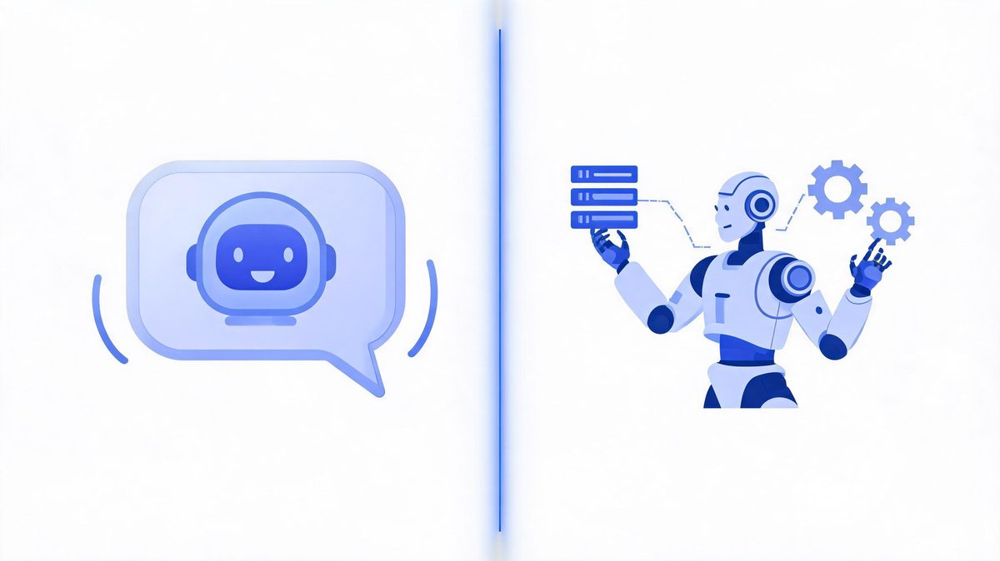
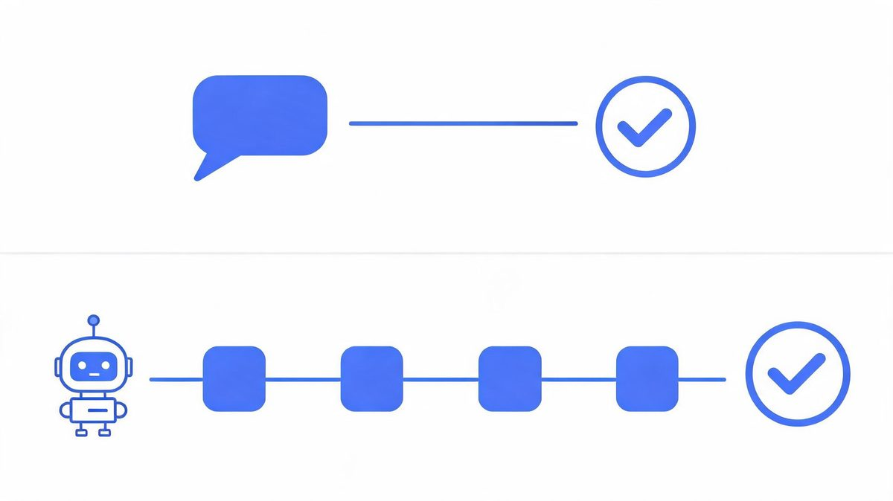
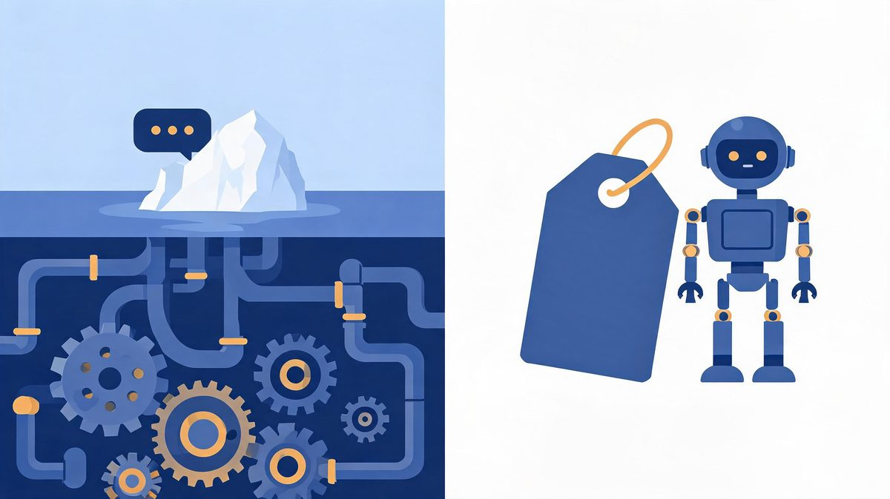
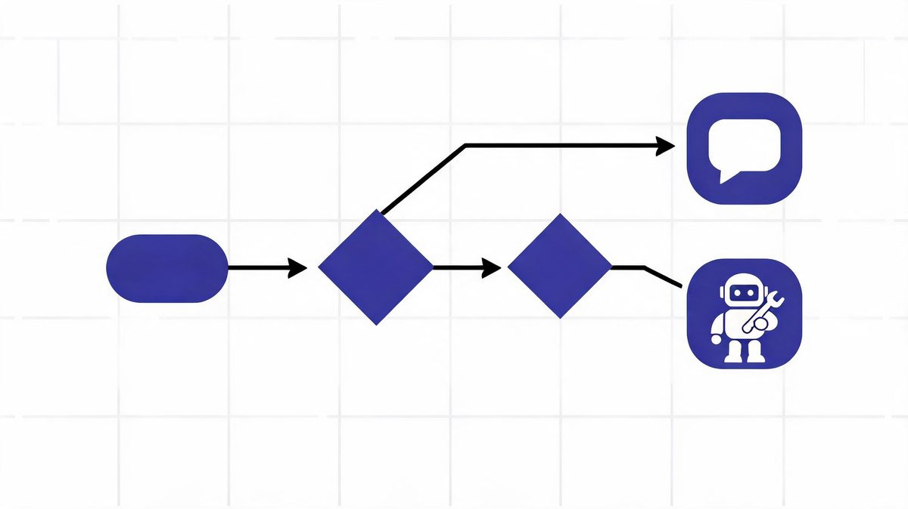
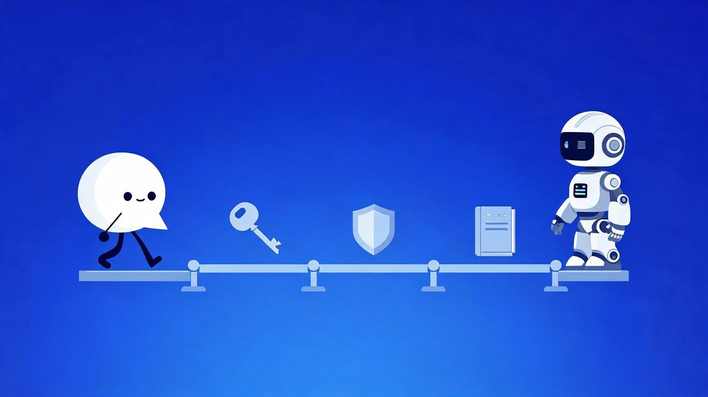

AI Agents vs Chatbots: The Difference That Decides Your Build

Teams keep buying "AI chatbots" and expecting employees. A chatbot that answers questions costs a fraction of an AI agent that updates your CRM — and the price gap is not intelligence, it is permissions, plumbing, and what happens when things go wrong.
Quick answer: An AI agent acts; a chatbot answers. A chatbot handles conversation — FAQ replies, routing, scripted flows — with no access to your systems. An AI agent plans multi-step work, calls APIs, updates records, and verifies results inside the tools you connect it to. The difference that decides your build is not intelligence: it is permissions, integration effort, and failure risk.
Key takeaway: Choose a chatbot when the job is conversation and a wrong answer only annoys someone. Choose an AI agent when the job touches business systems — CRM updates, order processing, follow-up sequences — because that is where autonomy pays. Budget reality: chatbots start around $12,500 for custom builds, while agents inherit IDC's brutal stat that 88% of pilots never reach production. The deciding question: does the task need access or just answers?
TL;DR:
- Chatbot = conversation, AI agent = action. Agents plan steps, call tools, and write back to systems; chatbots reply and route.
- Cost follows access. Custom chatbots run ~$12,500-$100,000 to build; agents add integration, permissions, monitoring, and approval loops on top.
- Risk inverts. A chatbot's worst case is a wrong answer; an agent's worst case is a wrong action in production — so agents need verification and human approval by design.
- Same model, different plumbing. ChatGPT-class models power both; what turns chat into agency is scoped API access and guardrails.
Table of Contents
The Core Difference: Answers vs Actions
The core difference between AI agents and chatbots is agency: chatbots respond inside a conversation, agents complete tasks across systems. Everything else — cost, risk, build time — flows from that one line. A chatbot reads your question, matches it against training or a knowledge base, and replies. An agent reads a goal, plans the steps, calls the tools it needs, and checks its own work before reporting back.

What is the main difference between an AI agent and a chatbot?
What is the main difference between an AI agent and a chatbot? The main difference is agency: a chatbot answers questions inside a conversation, while an AI agent plans multi-step work, calls tools and APIs, and performs actions inside connected business systems.
According to 2026 vendor documentation from Zendesk and Intercom, chatbots follow set rules and knowledge bases, while agents analyze context and decide which actions to run (Sources: Zendesk, Intercom, 2026). IDC research adds the stakes: 88% of AI agent pilots never reach production, and only about 11% of adopters run agents in production (Sources: IDC, Fortune, 2026).
For example, when a customer asks where an order is, a chatbot replies with the tracking link; an agent using Salesforce reads the order, finds the delay, updates the ticket, and emails a corrected date. We found teams confuse the two because vendors market both as AI assistants.
First, check whether the system can act, not just answer. Second, check what it may touch. Finally, check who verifies.
Capability-by-Capability Comparison
Which capabilities separate an AI agent from a chatbot?
Which capabilities separate an AI agent from a chatbot? The six capabilities that separate an AI agent from a chatbot are system access, multi-step execution, autonomy, task memory, failure handling, and integration cost.
According to 2026 platform comparisons across Zendesk, Albato, and Canon Business Services, chatbots suit simple predictable questions while agents handle high-volume operations with exceptions (Sources: Zendesk, Albato, Canon BS, 2026). IDC data shows 88% of agent pilots stall on integration and reliability, and Gartner forecasts $2.595 trillion in AI spending for 2026 (Sources: IDC, Gartner, 2026).
For example, teams using Intercom or Zapier chain check inventory, reserve stock, draft a purchase order, and notify the supplier as one goal, where a chatbot needs a human between every step. We found buyers skip the integration-cost row and regret it later.
First, map the capabilities your workflow needs. Second, price the access each capability requires. Finally, buy the simpler category that covers the job.
| Capability | Chatbot | AI Agent |
|---|---|---|
| System access | None or read-only FAQ | Scoped API write access to CRM, databases, tools |
| Task length | Single turn or scripted flow | Multi-step plans executed end-to-end |
| Autonomy | Replies when spoken to | Acts on triggers with limited supervision |
| Memory across sessions | Conversation history only | Task state, goals, and audit trail |
| When it fails | Wrong answer — annoying, recoverable | Wrong action — potentially expensive, needs rollback design |
| Build cost | ~$12,500-$100,000 custom; low-cost SaaS tiers | Chatbot base + integration, permissions, monitoring, approvals |
The Cost Gap Nobody Quotes Correctly
Which costs more: a chatbot or an AI agent?
Which costs more: a chatbot or an AI agent? The chatbot price tag is visible and the agent price tag is systemic: custom chatbots cost between $12,500 and $100,000 to build in 2026, while AI agents add the integration bill for scoped API development, permission design, monitoring, and human-approval workflows.
According to IDC research, 88% of AI agent pilots never reach production, and the blockers are integration architecture and data readiness rather than model quality (Sources: IDC, 2026). Gartner counts over 40% of agentic AI projects canceled for unclear value and high risk (Sources: Gartner, 2026).
For example, two teams buy the same model: one team wraps it in a chat widget and ships in three weeks; another team using Salesforce connects write permissions, adds verification, and ships in three months, but the second system updates records. We found the honest budget rule is that agents cost 3 to 10 times the chatbot for the same use case.
First, budget for permissions and audit trails, not just the model. Second, price failure handling before features. Finally, instrument a baseline so value is provable, because unclear value is the top cancellation reason.

Risk: Wrong Answer vs Wrong Action
Why do AI agent projects fail more often than chatbots?
Why do AI agent projects fail more often than chatbots? Because the failure modes are different in kind, not degree: a chatbot's failure is a wrong answer in a conversation, while an agent's failure is a wrong action inside production systems — a misdirected refund, a corrupted CRM record, an email sent to the wrong customer. According to IDC, 88% of AI agent pilots never reach production (Sources: IDC, 2026), and MIT-affiliated researchers reviewing hundreds of AI initiatives found 95% of generative AI pilots failed to deliver measurable ROI (Sources: MIT via Tricentis, 2026). For example, an agent with unscoped write access that misreads a discount policy does not say something wrong — it does something wrong, at database scale. We found the fix is architectural, not aspirational: scoped permissions per task, schema validation before actions, human approval above value thresholds, and a kill switch per workflow. First, classify every agent action by blast radius. Second, put human approval wherever the blast radius is financial or customer-facing. Finally, log everything, because audit trails are how agents earn autonomy.
The asymmetry that decides everything: a chatbot's worst day costs you an apology. An agent's worst day costs you a rollback, an audit, and possibly a customer. Design for that asymmetry and the agent vs chatbot question answers itself for every workflow you own.
Which One Do You Need? The 4-Question Test
When should a business use a chatbot instead of an AI agent?
When should a business use a chatbot instead of an AI agent? When the work is conversational, repetitive, and low-risk: FAQ answering, intake routing, status lookups, and guided forms where a wrong answer costs an apology rather than a rollback. According to 2026 practitioner analyses, chatbots outperform on simple predictable questions while agents earn their cost in high-volume operations with exceptions (Sources: CloudHumans, Canon Business Services, 2026). For example, a restaurant taking reservation questions needs a chatbot; a logistics company reconciling 10,000 daily shipment exceptions needs an agent. We found four questions sort any workflow into the right category in under five minutes. First, does the task require changing data, or only retrieving it? Second, does the workflow span multiple systems? Third, can a wrong output be fixed with one message? Fourth, is there a measurable baseline to prove improvement? Two or more "yes" answers to the first three point to an agent; a clean sweep of "no" means a chatbot will do, at a tenth of the build.
The 4-Question Decision Test
| Question | Yes → | No → |
|---|---|---|
| 1. Does it change data, not just read it? | Agent territory | Chatbot fine |
| 2. Does it span 2+ systems? | Agent territory | Chatbot fine |
| 3. Is a wrong output hard to undo? | Needs agent + approvals | Chatbot fine |
| 4. Can you measure a before/after baseline? | Worth building either | Fix measurement first |

Can You Upgrade a Chatbot Into an Agent?
Can a chatbot be upgraded into an AI agent?
Can a chatbot be upgraded into an AI agent? Yes, and the upgrade path is integration rather than intelligence: connect the chatbot to your systems through APIs, define read and write scopes, add verification before actions, and log every step. According to 2026 platform documentation, the same underlying model powers both modes — OpenAI, Microsoft, and Intercom all ship chat mode and agent mode on one model, separated by tools and permissions rather than brains (Sources: OpenAI, Microsoft Copilot Studio, Intercom, 2026). For example, Intercom's Fin answers as a chatbot until you grant it permission to process refunds, and the moment that permission exists, verification and approval loops become mandatory. We found teams that upgrade in stages — one permission at a time, one workflow at a time — avoid the pilot-failure statistics entirely. First, add read-only access and measure what the system does with context. Second, add write access to exactly one low-risk field. Finally, expand permissions only as the audit log earns trust. The full implementation sequence lives in our pillar guide to AI agent integration, including the ASSESS → CONNECT → CONTROL → EXPAND framework.

Same Business, Two Builds: A Worked Example
Abstract comparisons hide the practical gap, so here is one ecommerce support scenario built both ways. The chatbot build: a widget trained on your help docs answers "where is my order" with tracking links, routes refund requests to humans, and handles 70% of volume with zero system access — live in three weeks. The agent build: the same model, connected to your order database and email system, looks up the order, detects the courier delay, updates the ticket, emails the customer a new date, and flags the supplier — with human approval on any refund above $50. The chatbot deflects work; the agent completes it. According to the adoption data, 79% of organizations have adopted some form of AI agent while only about 11% run them in production (Sources: Fortune enterprise research, 2026) — and the ones in production started with the chatbot build, learned the question patterns, then earned their permissions. We found the sequencing matters more than the choice: chatbot first is not a compromise, it is the training period. First, ship the chatbot and log every unanswered question. Second, connect the agent to exactly the workflows the logs prove are painful. Finally, expand permissions on the evidence.
FAQs
What is the main difference between an AI agent and a chatbot?
Agency. A chatbot answers questions inside a conversation; an AI agent plans multi-step work, calls tools and APIs, and performs actions inside connected systems. Chatbots are reactive and script-oriented; agents are goal-driven and act within the permissions you grant.
Is ChatGPT an AI agent or a chatbot?
By default, a chatbot — it responds in conversation and cannot reach your business systems alone. With connectors, tools, and API permissions enabled, the same model powers agent behavior. Vendors now ship both modes on one model: chat mode and agent mode, separated by permissions rather than intelligence.
Which costs more: a chatbot or an AI agent?
The agent, by a multiple of roughly 3-10x for the same use case. Custom chatbots run about $12,500-$100,000 to build (2026 estimates), while agents add the integration bill: scoped API development, permission design, monitoring, exception handling, and human-approval workflows that a chatbot never needs.
Can a chatbot be upgraded into an AI agent?
Yes — by adding integration, not intelligence. Connect the chatbot to your systems via APIs, define read and write scopes, add verification for actions, and log everything. The model usually stays the same; the permissions and plumbing are the upgrade.
When should a business use a chatbot instead of an AI agent?
When tasks are conversational, repetitive, and low-risk: FAQs, routing, status lookups. Use an AI agent when work is multi-step, touches business systems, and requires actions like updating CRM records or processing orders — where autonomy pays for its own governance.
Why do AI agent projects fail more often than chatbots?
Because agents touch production systems. IDC research puts 88% of AI agent pilots out of production, with integration, reliability, and security as blockers — not model quality. Gartner counts over 40% of agentic projects canceled for unclear value and high risk. Chatbots dodge most of that by never touching your data.
The Bottom Line
The AI agents vs chatbots decision is not about which technology is smarter — both run on the same models. It is about what your workflow needs: answers or actions. A chatbot is the right buy when the job is conversation, the volume is repetitive, and the worst case is an apology. An AI agent is the right build when the job touches systems, the steps span tools, and the payoff is measured in completed work rather than deflected tickets. Start with the chatbot where you can, log what it cannot answer, and let that evidence — not vendor demos — justify the agent's integration budget. The 88% of agent pilots that die share one autopsy: someone bought autonomy before earning permissions. Run the 4-question test on your workflow, read the AI agent integration pillar guide for the implementation framework, and build the simpler thing that works.
Sources
- Zendesk — AI agent vs AI chatbot: key differences and features, 2025-2026
- IDC research on AI agent pilot failure rates (88%), via Institute PM and Innoflexion analyses, 2026
- Gartner — 40%+ of agentic AI projects canceled; $2.595T AI spending forecast, 2026
- MIT-affiliated research via Tricentis — 95% of generative AI pilots failed to deliver measurable ROI, 2026
- Vrinsofts — AI chatbot development cost guide ($12,500-$100,000), 2026
- Albato, Canon Business Services, CloudHumans — chatbot vs agent deployment guidance, 2026
- Fortune enterprise research — 79% agent adoption vs 11% production, 2026